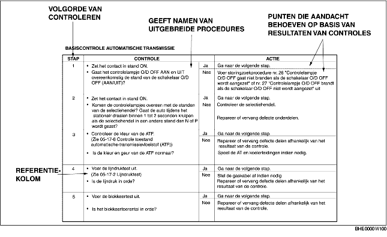
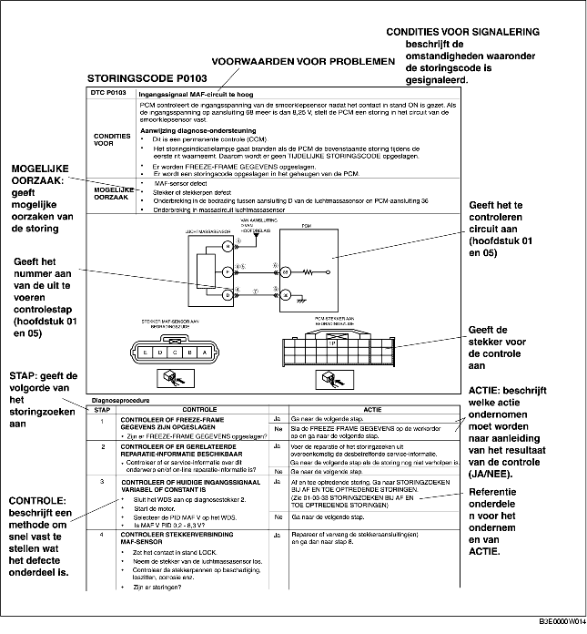

GEBRUIK VAN DIT HANDBOEK
B3E000000001W01
Soorten handelingen
• Dit werkplaatshandboek bevat de procedures voor het uitvoeren van al het benodigde onderhoud. De procedures kunnen worden uitgesplitst in 5 basishandelingen:
-
- Verwijderen/Plaatsen
-
- Demonteren/Monteren
-
- Vervangen
-
- Controleren
-
- Afstellen
• Eenvoudige handelingen die gemakkelijk uitgevoerd kunnen worden door alleen naar de auto te kijken (dat wil zeggen, verwijderen/plaatsen van onderdelen, op de krik plaatsen, op de brug plaatsen, reinigen van onderdelen, en visuele inspectie) zijn weggelaten.
Onderhoudsprocedure
Controleren, afstellen
-
• De controle- en afstelprocedures zijn onderverdeeld in stappen. Belangrijke gegevens met betrekking tot de lokatie en de inhoud van de procedures worden gedetailleerd uitgelegd en weergegeven in de afbeeldingen.
Reparatieprocedure
1. Aan het begin van de meeste reparatieprocedures wordt een overzichtsafbeelding gegeven. Daarin kunnen de onderdelen geïdentificeerd worden, wordt aangegeven hoe de delen in elkaar passen en worden visuele controles aangegeven. Alleen die procedures voor het verwijderen/plaatsen die in een bepaalde volgorde moeten worden uitgevoerd, worden beschreven.
2. Te vervangen onderdelen, aanhaalmomenten en symbolen voor olie, vet en siliconenpakking worden in de overzichtsafbeelding aangegeven. Daarnaast wordt aangegeven bij welke onderdelen gebruik moet worden gemaakt van speciaal gereedschap of gelijkwaardig.
3. De procedures zijn genummerd en het onderdeel waar het in de procedure om gaat is in de afbeelding aangegeven met hetzelfde nummer. Soms moet er bij een bepaalde procedure op een aantal belangrijke zaken of op aanvullende informatie worden gelet. Raadpleeg dan de informatie waarnaar verwezen wordt.
Symbolen
• Er worden 8 symbolen gebruikt waarmee smeermiddelen, vloeistoffen, siliconenpakking en het gebruik van SST worden aangegeven. Deze symbolen geven de punten aan waar het desbetreffende smeermiddel of de siliconenpakking moet worden aangebracht of wanneer het speciaal gereedschap moet worden gebruikt.
|
Symbool
|
Betekenis
|
Soort
|
|

|
Breng olie aan
|
Nieuwe motorolie respectievelijk versnellingsbakolie volgens specificatie
|
|

|
Breng remvloeistof aan
|
Nieuwe remvloeistof volgens specificatie
|
|

|
Breng automatische-transmissievloeistof aan
|
Nieuwe automatische-transmissievloeistof volgens specificatie
|
|

|
Breng vet aan
|
Vet volgens specificatie
|
|

|
Breng siliconenpakking aan
|
Siliconenpakking volgens specificatie
|
|

|
Breng vaseline aan
|
Geschikte vaseline
|
|

|
Vervang onderdeel
|
O-ring, pakking, enz.
|
|

|
Gebruik SST of gelijkwaardig
|
Voorgeschreven gereedschap
|
Adviezen en gegevens
• In dit handboek zult u diverse waarschuwingen, opmerkingen, aanwijzingen, specificaties en onder- en bovengrenzen tegenkomen.
Waarschuwing
-
• Waarschuwingen wijzen u erop extra voorzichtig te zijn wanneer onachtzaamheid persoonlijk letsel kan veroorzaken.
Opmerking
-
• Opmerkingen wijzen u erop voorzichtig te zijn om te voorkomen dat u een fout maakt waardoor de auto of onderdelen beschadigd zouden kunnen raken.
Aanwijzing
-
• Een aanwijzing geeft extra informatie die u behulpzaam is bij het uitvoeren van een bepaalde procedure.
Specificatie
-
• De specificatie geeft aan binnen welke marges een gemeten of afgestelde waarde moet vallen.
Onder- en bovengrenzen
-
• De onder- en bovengrenzen geven aan marges waarboven, respectievelijk waaronder een gemeten of afgestelde waarde moet vallen.
Storingzoekprocedure
Basisprocedure bij storingzoeken

Storingzoekschema (zelfdiagnose)
-
• De storingscodes vormen een belangrijk instrument voor het repareren van storingen die moeilijk te simuleren zijn. Door de bij de storingscode behorende controleprocedure te volgen kan het defect snel en accuraat worden opgespoord.
-
• De zelfdiagnosefunctie wordt gebruikt tijdens de controle. Als er een storingscode wordt aangegeven, moeten de aanwijzingen worden gevolgd die gegeven worden in de bij de storingscode behorende tabel.
Storingzoektabel
-
• In de storingzoektabel staan de symptomen van de defecten. Kies die symptomen die behoren of waarschijnlijk behoren bij de aanwezige storing.
Tabel voor snelle diagnose (indien opgenomen)
-
• Deze tabel geeft een overzicht van de diagnose- en controleprocedures die moeten worden gevolgd om aan de hand van de symptomen snel de mogelijke oorzaak op te kunnen sporen.
Storingzoekschema's
-
• Met behulp van de storingzoekschema's kan op basis van de aard van de symptomen snel worden vastgesteld waar het defect aanwezig is.
Procedures voor het gebruik
Voer de basiscontrole uit (hoofdstuk 05)
-
• Voer de basiscontrole uit vóór het storingzoeken volgens de storingzoekschema's.
-
• Voer de controles in de aangegeven volgorde uit.
-
• Bij elke basiscontrole wordt aangegeven waar een gedetailleerde beschrijving van de procedure te vinden is.
-
• Als de oorzaak van de storing wordt gevonden tijdens de basiscontrole, voer dan de procedures uit zoals deze zijn aangegeven in de kolom 'Opmerkingen'.

Gebruik van storingzoekschema's
-
• De storingzoekschema's geven aan welke diagnoseprocedure, controlemethode en actie er bij een bepaalde storingscode moet worden ondernomen.

Storingzoektabel
-
• De symptomen van de storingen zijn in de storingzoektabel opgesomd voor het storingzoeken van het systeem.
-
• De exacte symptomen van storing kunnen worden geselecteerd aan de hand van de index.
Tabel voor snelle diagnose
-
• Deze tabel geeft een overzicht van de symptomen en de mogelijke oorzaken.
-
• De tabel is een effectief hulpmiddel bij het gericht zoeken naar de relatie tussen de symptomen en de oorzaak van het defect. Bovendien kan met de tabel de mogelijke oorzaak van een aantal gelijktijdig aanwezige storingen worden opgespoord.
-
• Welk onderdeel een bepaald symptoom kan veroorzaken, kunt u zien door achter het desbetreffende symptoom de kolom naar beneden te volgen.
Storingzoekschema's
-
• De storingzoekschema's geven aan welke diagnoseprocedures, controlemethodes en acties er bij een bepaald symptoom moet worden ondernomen.